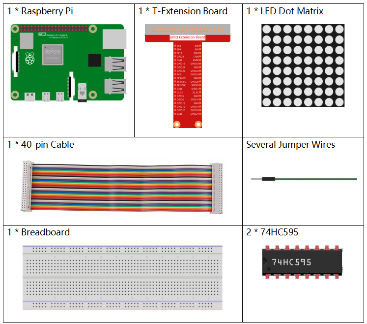

Nota
¡Hola! Bienvenido a la Comunidad de Entusiastas de SunFounder para Raspberry Pi, Arduino y ESP32 en Facebook. Sumérgete en el mundo de Raspberry Pi, Arduino y ESP32 junto a otros entusiastas.
¿Por qué unirse?
Soporte Experto: Resuelve problemas postventa y desafíos técnicos con la ayuda de nuestra comunidad y equipo.
Aprende y Comparte: Intercambia consejos y tutoriales para mejorar tus habilidades.
Avances Exclusivos: Accede anticipadamente a anuncios de nuevos productos y adelantos exclusivos.
Descuentos Especiales: Aprovecha descuentos exclusivos en nuestros productos más recientes.
Promociones Festivas y Sorteos: Participa en sorteos y promociones especiales.
üëâ ¬øListo para explorar y crear con nosotros? Haz clic en [Aqu√≠] y únete hoy mismo.
1.1.6 Matriz de Puntos LED
Introducción
Como sugiere el nombre, una matriz de puntos LED es una matriz compuesta por LEDs. El encendido y apagado de los LEDs permite formar diferentes caracteres y patrones.
Componentes Necesarios
Para este proyecto, necesitamos los siguientes componentes.
{kind=link}
Principio
Matriz de Puntos LED
En general, las matrices de puntos LED pueden categorizarse en dos tipos: cátodo común (CC) y ánodo común (CA). Su aspecto es similar, pero internamente presentan diferencias. Puedes distinguirlas realizando una prueba. En este kit utilizamos una de tipo CA. Puedes ver que está etiquetada con 788BS en el lateral.
Observa la figura a continuación. Los pines están dispuestos en ambos extremos de la parte posterior. Usando la etiqueta lateral como referencia: los pines en este extremo son del 1 al 8, y en el otro extremo del 9 al 16.
Vista externa:

En las siguientes figuras se muestra su estructura interna. Puedes ver que en una matriz de puntos LED CA, la fila (ROW) representa el ánodo del LED y la columna (COL) el cátodo; en una CC es al contrario. Un punto en común para ambos tipos: en ambos casos, los pines 13, 3, 4, 10, 6, 11, 15 y 16 corresponden a COL, mientras que los pines 9, 14, 8, 12, 1, 7, 2 y 5 corresponden a ROW. Si deseas encender el primer LED en la esquina superior izquierda, para una matriz LED CA solo debes configurar el pin 9 en alto y el pin 13 en bajo; para una matriz CC, configura el pin 13 en alto y el pin 9 en bajo. Si deseas iluminar toda la primera columna, en una CA, configura el pin 13 en bajo y los pines de ROW 9, 14, 8, 12, 1, 7, 2 y 5 en alto; en una CC, configura el pin 13 en alto y los de ROW en bajo. Consulta las siguientes figuras para una mejor comprensión.
Vista interna:

Numeración de pines correspondiente a las filas y columnas anteriores:
COL |
1 |
2 |
3 |
4 |
5 |
6 |
7 |
8 |
Pin No. |
13 |
3 |
4 |
10 |
6 |
11 |
15 |
16 |
ROW |
1 |
2 |
3 |
4 |
5 |
6 |
7 |
8 |
Pin No. |
9 |
14 |
8 |
12 |
1 |
7 |
2 |
5 |
Además, aquí se utilizan dos chips 74HC595. Uno controla las filas de la matriz de puntos LED mientras que el otro controla las columnas.
Diagrama de Conexiones
T-Board Name |
physical |
wiringPi |
BCM |
GPIO17 |
Pin 11 |
0 |
17 |
GPIO18 |
Pin 12 |
1 |
18 |
GPIO27 |
Pin 13 |
2 |
27 |

Procedimientos del Experimento
Paso 1: Construye el circuito. Dado que el cableado es complejo, haremos el proceso paso a paso. Primero, inserta el T-Cobbler, la matriz de puntos LED y los dos chips 74HC595 en la protoboard. Conecta el pin 3.3V y el GND del T-Cobbler a los agujeros en los dos lados de la placa, luego conecta los pines 16 y 10 de los dos chips 74HC595 a VCC, y los pines 13 y 8 a GND.
Nota
En la imagen Fritzing anterior, el lado con la etiqueta está en la parte inferior.

Paso 2: Conecta el pin 11 de los dos chips 74HC595 entre sí y luego a GPIO27; luego el pin 12 de ambos chips a GPIO18; después, el pin 14 del 74HC595 en el lado izquierdo a GPIO17 y el pin 9 al pin 14 del segundo 74HC595.

Paso 3: El 74HC595 en el lado derecho controla las columnas de la matriz de puntos LED. Consulta la tabla a continuación para el mapeo. Por lo tanto, los pines Q0-Q7 del 74HC595 están mapeados con los pines 13, 3, 4, 10, 6, 11, 15 y 16 respectivamente.
74HC595 |
Q0 |
Q1 |
Q2 |
Q3 |
Q4 |
Q5 |
Q6 |
Q7 |
LED Dot Matrix |
13 |
3 |
4 |
10 |
6 |
11 |
15 |
16 |

Paso 4: Ahora conecta las filas (ROW) de la matriz de puntos LED. El 74HC595 en el lado izquierdo controla ROW de la matriz LED. Consulta la tabla a continuación para el mapeo. Como se observa, los pines Q0-Q7 del 74HC595 en el lado izquierdo están mapeados con los pines 9, 14, 8, 12, 1, 7, 2 y 5 respectivamente.
74HC595 |
Q0 |
Q1 |
Q2 |
Q3 |
Q4 |
Q5 |
Q6 |
Q7 |
LED Dot Matrix |
9 |
14 |
8 |
12 |
1 |
7 |
2 |
5 |

Paso 5: Abre el archivo de código.
cd ~/davinci-kit-for-raspberry-pi/python-pi5
Paso 6: Ejecuta.
sudo python3 1.1.6_led_dot_matrix.py
Al ejecutar el código, la matriz de puntos LED se encenderá y apagará fila por fila y columna por columna.
Advertencia
Si aparece el mensaje de error RuntimeError: Cannot determine SOC peripheral base address, consulta Si gpiozero no funciona.
Código
Nota
Puedes Modificar/Restablecer/Copiar/Ejecutar/Detener el código a continuación. Pero antes de eso, debes ir a la ruta del código fuente como davinci-kit-for-raspberry-pi/python-pi5. Después de modificar el código, puedes ejecutarlo directamente para ver el efecto.
#!/usr/bin/env python3
from gpiozero import OutputDevice
from time import sleep
# Definir los pines GPIO conectados al registro de desplazamiento 74HC595
SDI = OutputDevice(17) # Entrada de Datos en Serie
RCLK = OutputDevice(18) # Reloj de Registro
SRCLK = OutputDevice(27) # Reloj de Registro de Desplazamiento
# Definir patrones para mostrar en la matriz; ROWs son ánodos (+), COLs son cátodos (-)
# Patrón para ROWs (señales de ánodo)
code_H = [0x01, 0xff, 0x80, 0xff, 0x01, 0x02, 0x04, 0x08, 0x10, 0x20, 0x40, 0x80, 0xff, 0xff, 0xff, 0xff, 0xff, 0xff, 0xff, 0xff]
# Patrón para COLs (señales de cátodo)
code_L = [0x00, 0x7f, 0x00, 0xfe, 0x00, 0x00, 0x00, 0x00, 0x00, 0x00, 0x00, 0x00, 0xfe, 0xfd, 0xfb, 0xf7, 0xef, 0xdf, 0xbf, 0x7f]
# Desplazar datos al 74HC595
def hc595_shift(dat):
""" Shift data to the 74HC595 shift register for displaying on the matrix. """
for i in range(8):
# Configurar valor de SDI y activar reloj de registro de desplazamiento
SDI.value = 0x80 & (dat << i)
SRCLK.on()
SRCLK.off()
# Activar reloj de registro para actualizar la pantalla
RCLK.on()
sleep(0.001)
RCLK.off()
def main():
""" Main loop for cycling through display patterns. """
while True:
# Recorrer patrones en orden ascendente
for i in range(len(code_H)):
hc595_shift(code_L[i])
hc595_shift(code_H[i])
sleep(0.1)
# Recorrer patrones en orden descendente
for i in range(len(code_H)-1, -1, -1):
hc595_shift(code_L[i])
hc595_shift(code_H[i])
sleep(0.1)
# Ejecutar bucle principal, manejar interrupción de teclado de forma segura
try:
main()
except KeyboardInterrupt:
pass
Explicación del Código
Este fragmento importa las clases necesarias para el proyecto.
OutputDevicedegpiozerose utiliza para controlar los componentes de hardware conectados a los pines GPIO, ysleepdetimepara agregar demoras.#!/usr/bin/env python3 from gpiozero import OutputDevice from time import sleep
Esta sección inicializa los pines GPIO conectados al registro de desplazamiento 74HC595.
SDIes la Entrada de Datos en Serie,RCLKes el Reloj de Registro, ySRCLKes el Reloj de Registro de Desplazamiento. Estos pines se usan para desplazar datos en el registro y controlar la visualización de la matriz LED.# Definir pines GPIO conectados al registro de desplazamiento 74HC595 SDI = OutputDevice(17) # Entrada de Datos en Serie RCLK = OutputDevice(18) # Reloj de Registro SRCLK = OutputDevice(27) # Reloj de Registro de Desplazamiento
code_Hycode_Ldefinen patrones binarios para controlar las filas (ánodos) y columnas (cátodos) de la matriz LED, respectivamente. Cada elemento en estos arrays representa un patrón binario que controla qué LEDs se encienden o apagan en la matriz.# Definir patrones para mostrar en la matriz; ROWs son ánodos (+), COLs son cátodos (-) # Patrón para ROWs (señales de ánodo) code_H = [0x01, 0xff, 0x80, 0xff, 0x01, 0x02, 0x04, 0x08, 0x10, 0x20, 0x40, 0x80, 0xff, 0xff, 0xff, 0xff, 0xff, 0xff, 0xff, 0xff] # Patrón para COLs (señales de cátodo) code_L = [0x00, 0x7f, 0x00, 0xfe, 0x00, 0x00, 0x00, 0x00, 0x00, 0x00, 0x00, 0x00, 0xfe, 0xfd, 0xfb, 0xf7, 0xef, 0xdf, 0xbf, 0x7f]
Esta función desplaza un byte de datos (
dat) en el registro de desplazamiento 74HC595. Itera sobre cada bit del byte, configurando el pinSDIen alto o bajo según el valor del bit y activa el pinSRCLKpara desplazar el bit en el registro. Después de desplazar todos los bits, activa el pinRCLKpara actualizar la visualización de la matriz LED.# Desplazar datos al 74HC595 def hc595_shift(dat): """ Shift data to the 74HC595 shift register for displaying on the matrix. """ for i in range(8): # Configurar valor de SDI y activar reloj de registro de desplazamiento SDI.value = 0x80 & (dat << i) SRCLK.on() SRCLK.off() # Activar reloj de registro para actualizar la pantalla RCLK.on() sleep(0.001) RCLK.off()
La función principal contiene un bucle infinito que recorre patrones predefinidos para la matriz LED. Utiliza la función
hc595_shiftpara enviar patrones de filas y columnas (code_Hycode_L) al registro de desplazamiento, primero en orden ascendente y luego en descendente, creando una visualización dinámica.def main(): """ Main loop for cycling through display patterns. """ while True: # Recorrer patrones en orden ascendente for i in range(len(code_H)): hc595_shift(code_L[i]) hc595_shift(code_H[i]) sleep(0.1) # Recorrer patrones en orden descendente for i in range(len(code_H)-1, -1, -1): hc595_shift(code_L[i]) hc595_shift(code_H[i]) sleep(0.1)
Este segmento asegura que el programa pueda interrumpirse usando una interrupción de teclado (Ctrl+C). Sale del bucle principal sin interrupciones abruptas o fugas de recursos.
# Ejecutar bucle principal, manejar interrupción de teclado de forma segura try: main() except KeyboardInterrupt: pass